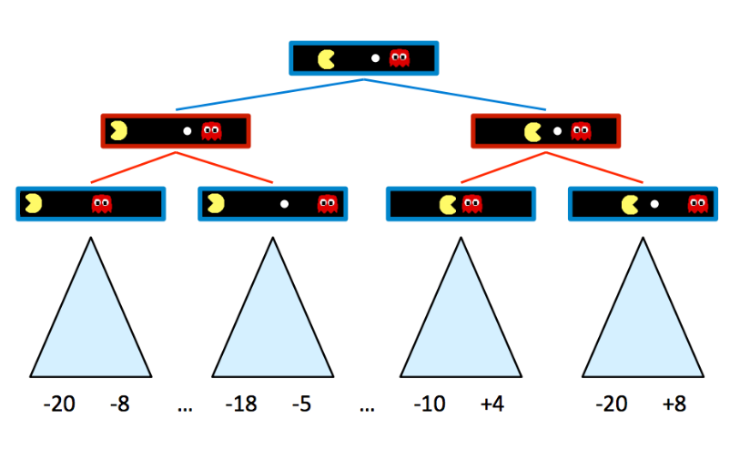
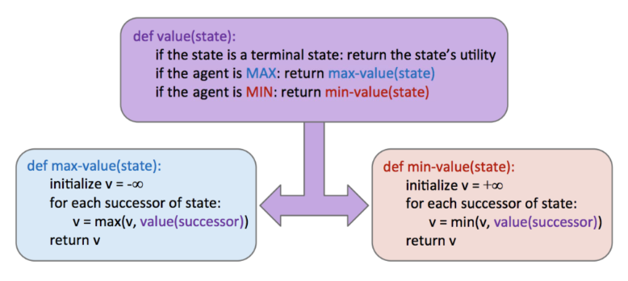
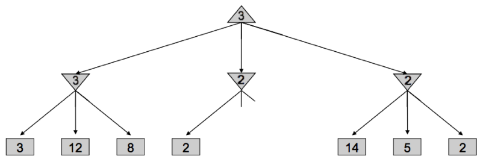
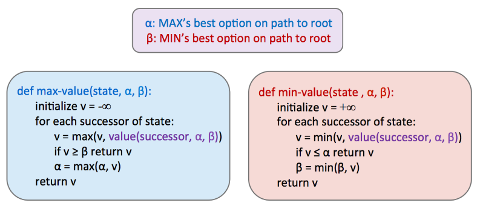
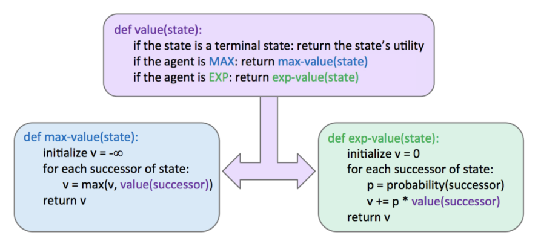
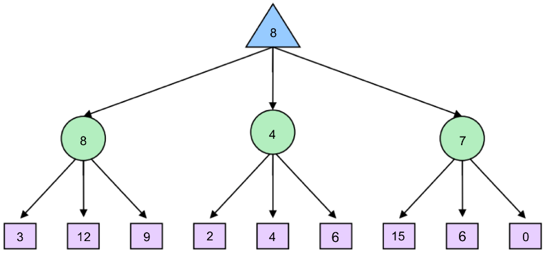
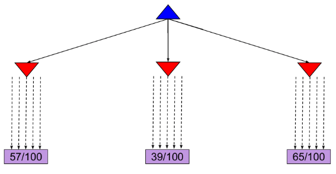
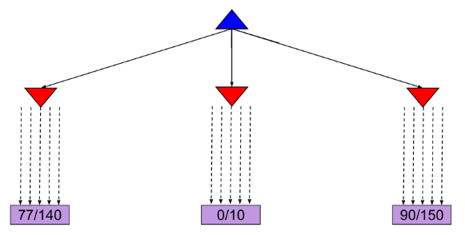
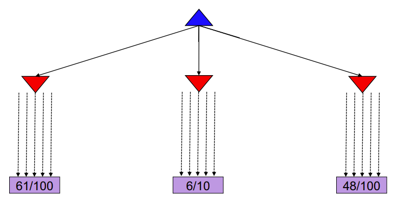
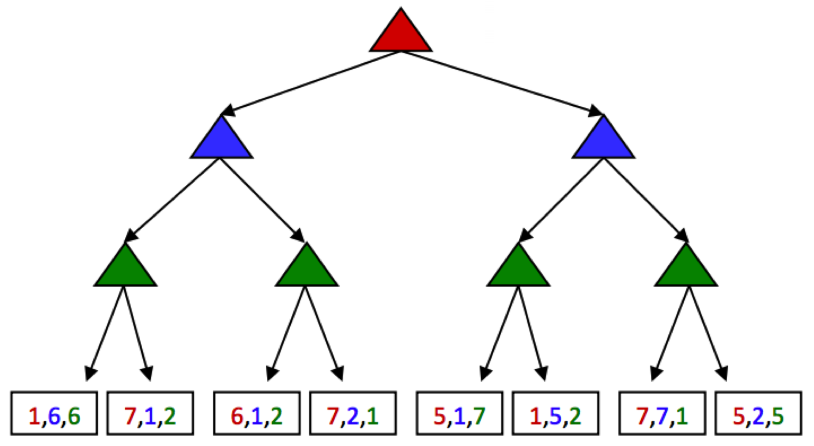

Search with Other Agents
Games
Games(Adversarial Search Problems): our agents have one or more adversaries who attempt to keep them from reaching their goal(s).
The standard game formulation consists of the following definitions:
- Initial state, \(s_0\)
- Players, \(Player(s)\) denote whose turn it is in state \(s\)
- Action, \(Actions(s)\) denote the available actions for the player
- Transition model, \(Result(s, a)\) denote the state that results from taking action \(a\) in state \(s\)
- Terminal test, \(Terminal - test(s)\)
- Terminal value, \(Utility(s, player)\)
Minimax
A state's value is defined as the best possible outcome (utility) an agent can achieve from that state.
- The value of a terminal state is called a terminal utility.
Defining \(V(s)\) as the function defining the value of state \(s\):
Example: Pacman
There is a ghost that wants to keep Pacman from eating the pellet.
The rules of the game dictate that the two agents take turns making moves, leading to a game tree where the two agents switch off on layers of the tree that they "control". An agent having control over a node simply means that node corresponds to a state where it is that agent’s turn, and so it’s their opportunity to decide upon an action and change the game state accordingly. Here’s the game tree that arises from the new two-agent game board above:

The minimax algorithm only maximizes over the children of nodes controlled by Pacman, while minimizing over the children of nodes controlled by ghosts.
In implementation, minimax performs a post-order traversal of the game tree.

Alpha-Beta Pruning
Issue
The time complexity of minimax is \(O(b^m)\), where \(b\) is the branching factor and \(m\) is the approximate tree depth at which terminal nodes can be found.
To help mitigate this issue, minimax has an optimization - alpha-beta pruning.
Conceptually, alpha-beta pruning is this: if you’re trying to determine the value of a node n by looking at its successors, stop looking as soon as you know that n’s value can at best equal the optimal value of n’s parent.

Implementing such pruning can reduce our runtime to as good as \(O(b^{m/2})\).

Evaluation Functions
Alpha-beta pruning still isn't enough to get to the bottom of search trees for a large majority of games. As a result, we turn to evaluation functions, functions that take in a state and output an estimate of the true minimax value of that node.
Depth-Limited Minimax
We treat non-terminal nodes located at our maximum solvable depth as terminal nodes, giving them mock terminal utilities as determined by a carefully selected evaluation function. Because evaluation functions can only yield estimates of the values of non-terminal utilities, this removes the guarantee of optimal play when running minimax.
- The better the evaluation function is, the closer the agent will come to behaving optimally.
- Going deeper into the tree before using an evaluation function also tends to give us better results.
The most common design for evaluation functions is a linear combination of features.
Each \(f_i(s)\) corresponds to a feature extracted from the input state \(s\), and each feature is assigned a corresponding weight \(w_i\).
Features are simply some element of a game state that we can extract and assign a numerical value.
Expectimax
Expectimax introduces chance nodes into the game tree, which instead of considering the worst case scenario as minimizer nodes do, consider the average case. Chance nodes compute the expected utility or expected value.


Monte Carlo Tree Search
MCTS is based on two ideas:
- Evaluation by rollouts: From state \(s\) play many times using a policy (e.g. random) and count wins/losses.
- Selective search: explore parts of the tree, without constraints on the horizon, that will improve decision at the root.
MCTS Version 0
Allocated the same amount of simulations to each alternative action:

MCTS Version 0.9
It might become clear after a few simulations that a certain action does not return many wins and thus we might choose to allocate this computational effort in doing more simulations for the other actions.
Allocate rollouts to more promising nodes:

MCTS Version 1.0
- Allocate rollouts to more promising nodes
- Allocate rollouts to more uncertain nodes

Upper Confidence Bounds (UCB) heuristics
The UCB algorithm captures this trade-off between “promising" and “uncertain’ actions by using the following criterion at each node \(n\):
- \(N(n)=\) number of rollouts from node \(n\)
- \(U(n)=\) total utility of rollouts (# wins) for player of \(\operatorname{PARENT}(n)\)
The first term captures how promising the node is, while the second captures how uncertain we are about that node’s utility. The user-specified parameter C balances the weight we put in the two terms ("exploration" and "exploitation") and depends on the application and perhaps the stage of the task.
The MCTS UCT algorithm uses the UCB criterion in tree search problem.
- Selection: recursively apply UCB to choose a path down to a leaf node n
- Expansion: add a new child c to n
- Simulation: run a rollout from c
- Backpropagation: update U and N counts from c back up to the root
General Game
Multi-agent utilities: rather than being a single value that alternating agents try to minimize or maximize, are represented as tuples with different values within the tuple corresponding to unique utilities for different agents.
Each agent attempts to maximize their own utility at each node they control, ignoring the utilities of the other agents.

Summary
In this lecture, we shifted gears from standard search problems to adversarial search problems. Two primary algorithms were considered:
- Minimax: Used when our opponent(s) behaves optimally, and can be optimized using \(\alpha-\beta\) pruning.
- Expectimax: Used when we facing a suboptimal opponent(s), using a probability distribution over the moves we believe they will make to compute the expectated value of states.
In most cases, it’s too computationally expensive to run the above algorithms -> evaluation functions for early termination.
For problems with large branching factors -> MCTS and UCB algorithms.
Finally, we considered the problem of general games, where the rules are not necessarily zero-sum.